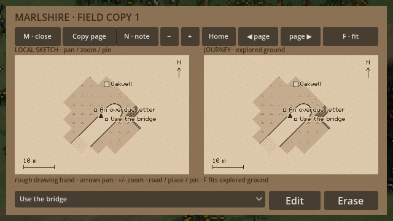
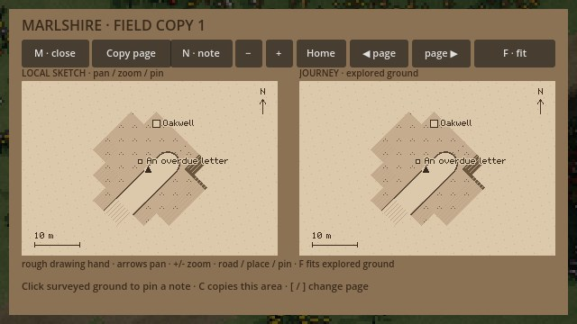

A field book you can correct
A road note is useful until you learn something better. Perhaps the ford is deeper than it looked, or the bridge is the safer way home. The county field book now lets you correct your own words.
Open the map and choose a note from the list along the foot of the page. Edit changes its wording while keeping the pin where you put it. Erase removes that annotation and frees space for another. The drawing itself still belongs to the character's observations.

Copies keep their own history
A field copy is its own sheet. Correcting a warning on one copy does not quietly rewrite the original book, and erasing it does not remove the same warning from another page. You can leave an old description in the book while making a copy with better directions.

The changes travel with the saved county journey. Returning to the road keeps both corrected wording and deliberate erasures. Cancelling a note leaves the page as it was.
This is a small addition to the existing county exploration view. The larger work of carrying, studying and trading physical maps is still ahead. For now, it makes the notes already on the page something you can live with and revise as the journey teaches you more.